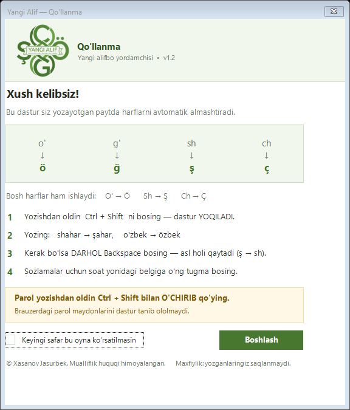
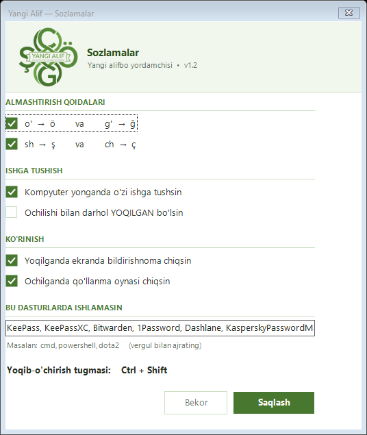

Yozayotganda harflaringiz o'zi to'g'irlansin
Yangi Alif — yozish paytida eski uslubdagi harflarni yangi lotin alifbosiga avtomatik almashtiradi. O'rnatish shart emas, sozlash shart emas — yuklab oling va yozing.
O'zingiz yozib ko'ring
Chapga matn yozing (yoki joylang) — o'ngda "Yangi Alif" ko'rinishi darhol chiqadi. Hech narsa qayerga ham yuborilmaydi, hammasi shu sahifaning o'zida ishlaydi.
4 qadamda tayyor
Hech qanday sozlash, hisob yaratish yoki internetga ulanish shart emas.
Yuklab oling
Faylni oching — dastur o'zini o'zi o'rnatadi. Administrator huquqi kerak emas.
Yoqing
Yozishdan oldin Ctrl + Shift bosing — soat yonidagi belgi yonadi.
Yozing
shahar → şahar, o'zbek → özbek — harflar o'zi to'g'ri shaklga o'tadi.
Xato bo'lsa
Darhol Backspace bosing — asl holiga (ş → sh) qaytadi.
Dastur qanday ko'rinadi
Katta oynalar yo'q — ishlaganda soat yonida kichik belgi bo'lib turadi, xolos.


Maxfiylik — shart emas, kafolat
Klaviaturangizni faqat harf almashtirish uchun kuzatamiz. Boshqa hech narsa uchun emas.
- ✓ Yozganlaringiz hech qayerga saqlanmaydi
- ✓ Faylga yozilmaydi, hech kimga yuborilmaydi
- ✓ Dastur internetga umuman ulanmaydi
- ✓ Hisob yaratish, ro'yxatdan o'tish shart emas
- ✓ Kodi ochiq — o'zingiz tekshirib ko'ring
Parollar haqida: dastur Windows'ning oddiy parol maydonlarida o'zi to'xtaydi, lekin brauzerdagi parol maydonlarini texnik jihatdan tanib bo'lmaydi. Parol yozishdan oldin Ctrl + Shift bilan o'chirib qo'ying — batafsil.
Yuklab olish
Kompyuteringizga mosini tanlang.
YangiAlif.exe — oddiy o'rnatish
Bosing, ochiladigan sehrgar (wizard) orqali o'zi o'rnatiladi. Ko'pchilik uchun mos.
⬇ YangiAlif.exe yuklab olishyuklanmoqda…
Portable (.zip) versiya
Agar Windows Smart App Control yoqilgan bo'lsa va .exe ishga tushmasa — shuni ishlating. Imzosiz .exe fayl umuman yaratilmaydi.
⬇ Portable (.zip)yuklanmoqda…
Xohlasangiz, xuddi shu fayllarni GitHub'dan ham yuklab olishingiz mumkin — u yerda barcha versiyalar saqlanadi.
Savol-javob
Nega Windows ogohlantirish chiqaradi? Bu xavfsizmi?
Ha, xavfsiz. Yangi Alif — kichik, mustaqil dasturchi tomonidan yaratilgan ilova va hali pullik code-signing sertifikatiga ega emas. Shuning uchun Windows uni "notanish dasturchi" deb belgilaydi. Bu dasturning zararli ekanini anglatmaydi — sertifikat olish rejalashtirilgan. Xohlasangiz, pastdagi "Portable" versiyani ishlating — u imzosiz .exe fayl yaratmaydi.
"Windows dasturingizni himoya qildi" degan oyna chiqsa nima qilaman?
Ochilgan oynada "Qo'shimcha ma'lumot" (More info) ni bosing, so'ng pastda chiqadigan "Baribir ishga tushirish" (Run anyway) tugmasini bosing.
Dastur pulmi?
Yo'q, butunlay bepul. Uni erkin ishlatishingiz va do'stlaringizga tavsiya qilishingiz mumkin.
Parol yozganimda nima bo'ladi?
Dastur Windows'ning klassik parol maydonlarini (masalan Windows tizim oynalari, eski dasturlar) tanib, u yerda o'zi to'xtaydi. Lekin brauzerdagi (Chrome, Firefox, Edge) va Telegram Desktop, Discord kabi dasturlardagi parol maydonlarini texnik jihatdan tanib bo'lmaydi — Windows'ga ular oddiy matn maydoni bo'lib ko'rinadi. Shuning uchun parol yozishdan oldin Ctrl + Shift bilan dasturni o'chirib qo'ying. Aks holda parolingizdagi "sh", "ch", "o'", "g'" harflari almashib, hisobingizga kira olmay qolishingiz mumkin. Parol menejerlari (KeePass, Bitwarden, 1Password va h.k.) esa standart holatda istisnolar ro'yxatiga kiritilgan.
Mening yozganlarimni ko'radimi yoki saqlaydimi?
Yo'q. Dastur klaviaturani FAQAT harf almashtirish uchun kuzatadi, hech narsani faylga yozmaydi va internetga umuman ulanmaydi.
Qaysi Windows versiyalarida ishlaydi?
Windows 10 va Windows 11 (32-bit va 64-bit). Administrator huquqi talab qilinmaydi.
O'chirish qanday?
Windows Sozlamalari → Ilovalar → "Yangi Alif" ni toping va "O'chirish" ni bosing. Barcha fayllar toza o'chiriladi.
Yuklab olgan faylim buzilmaganini qanday tekshiraman?
Yuklab olish tugmalari ostida ko'rsatilgan SHA-256 kodini kompyuteringizdagi fayl bilan solishtiring. Windows'da (qo'shimcha dastursiz): PowerShell'da Get-FileHash YangiAlif.exe -Algorithm SHA256, yoki cmd'da certutil -hashfile YangiAlif.exe SHA256. Ikkalasi bir xil bo'lsa — fayl yo'lda o'zgartirilmagan.